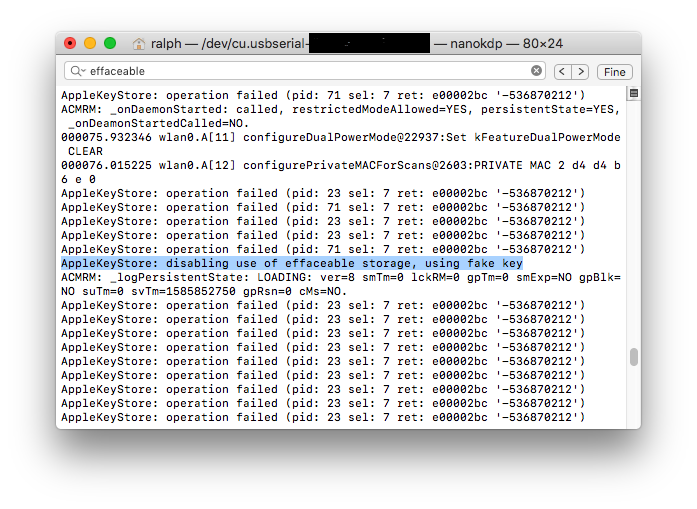

First boot
It's finally time to put the iPhone into pwned dfu and boot using irecovery:Send iBSS, along with iBEC: (make sure to send regular iBEC this time!)
irecovery -f iBSS.img4
irecovery -f iBEC.img4
Once again for A10 and newer devices ONLY:
irecovery -f iBSS.img4
irecovery -f iBEC.img4
irecovery -c go
send and load ramdisk:irecovery -f ramdisk
irecovery -c ramdisk
send and load devicetree:irecovery -f devicetree.img4
irecovery -c devicetree
If your target system is iOS 12.x or newer, send signed trustcache: (otherwise this can be skipped)
irecovery -f trustcache.img4
irecovery -c firmware
Send kernelcache and bootx:irecovery -f kernelcache.img4
irecovery -c bootx
In the case of generating keybags:
If you see “AppleKeyStore: disabling use of effaceable storage, using fake key”, in verbose output, you can reboot to first system.  Now mount disk0s1s3 and put keybagd in its original place:mv /mnt1/usr/libexec/keybagd_bak /mnt1/usr/libexec/keybagd
We’re done. If you’ve done everything correctly the device should boot in the next boot.